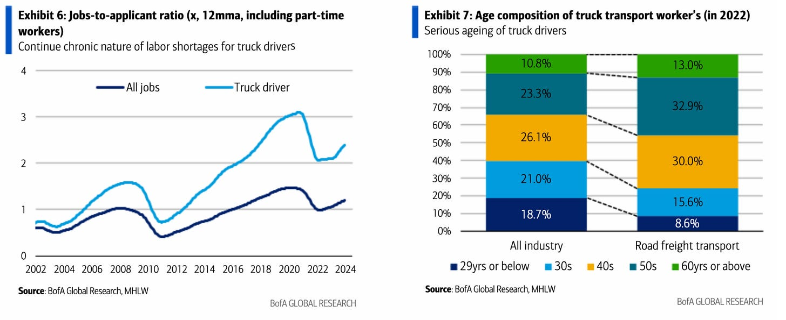
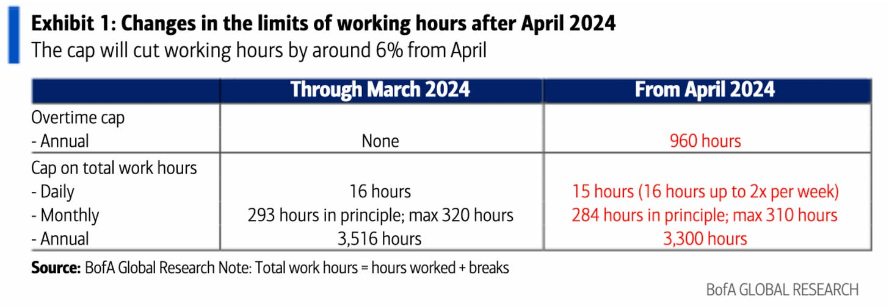
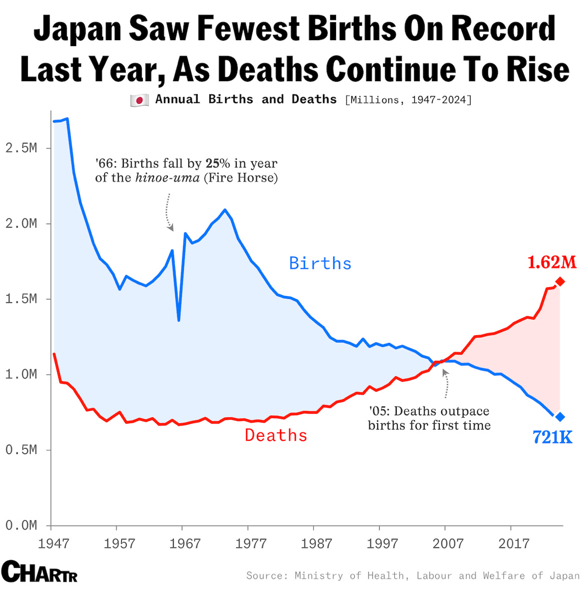
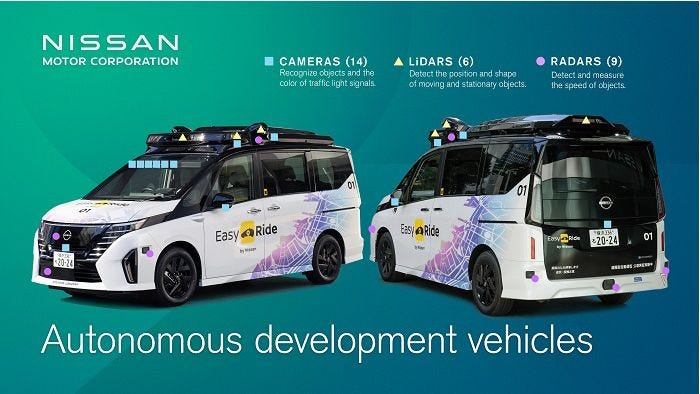
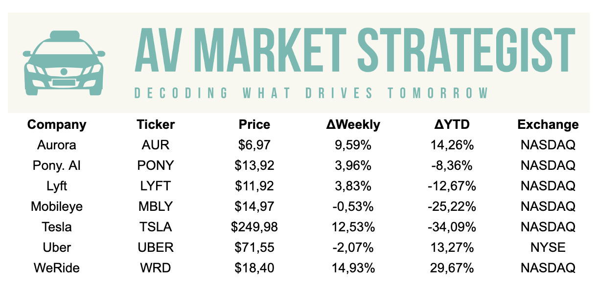

2025年3月17日、CW12（第12週）の幕開けとともに、自動運転車の実用展開における世界的な勢いが加速している。ドライバー不足という深刻な課題に取り組む日本政府主導の施策から、WeRideが3大陸にわたって進める積極的な拡張戦略、そしてウェイモのシリコンバレー進出まで――今週は、自動運転が孤立した実証実験から、多様な市場をまたぐ統合的な商業戦略へと移行しつつある様子を如実に示している。

日本は今、輸送インフラの危機に直面している。高齢化の進展と労働人口の減少により、トラックドライバーはすでに約17万人不足しており、この数字は2030年までに35万人に膨らむと予測されている。この不足は経済に年間130億ドル以上の損失をもたらし、国内の物流インフラそのものを脅かしている。政府はこの状況を打開すべく、自動運転の普及を加速させる具体的な政策介入に乗り出している。
警察庁（NPA）は、2025年3月末までに国内高速道路におけるレベル4自動運転車のガイドラインを策定・公表する準備を進めている。これが実現すれば、人間の監視なしに完全自動化された高速道路走行が可能となる。国土交通省（MLIT）はすでにレベル4トラック運行の特定ルートを承認しており、経済産業省（METI）も自動化トラック開発に向けた専用資金を拠出するなど、政策的なコミットメントは着実に形になりつつある。
日本の主要企業もこの流れに乗じて大きな動きを見せている。国内最大の物流企業である日本通運ホールディングスは、自律走行トラックをネットワークに統合する計画を発表した。三菱グループは完全自動化システムの開発を進めている。ここで重要なのは日本の地理的条件だ。主要都市間を結ぶ長距離高速道路、予測しやすい交通パターン、厳格な安全規制――これらの要素が相まって、高速道路でのトラック輸送は自動運転導入の入口として特に適したセクターとなっている。

WeRideは野心的な国際展開戦略を着々と実行している。同社はフランクフルト交通当局からロボバスサービスの認可を取得したばかりで、欧州で乗用車とバスの両カテゴリーでライセンスを取得した初の企業となった。この欧州展開は戦略的な意義が特に大きい。WeRideは45都市で事業を展開するエストニアのライドヘイリングプラットフォーム「Bolt」との提携を通じて、BoltのアプリネットワークにWeRideのロボタクシーを統合しようとしている。この提携により、消費者向けインフラをゼロから構築することなく、欧州全体で即座に大規模な配車網を活用できる可能性がある。
同時に、WeRideは中東でのプレゼンスも拡大している。ドバイのEMAAR Propertiesと連携し、EMAARの複合用途開発エリア内でロボタクシーサービスを展開する計画だ。これは独自の戦略といえる――運用ドメインが明確に定義された管理された商業不動産環境をターゲットにすることで、一般道路での展開に伴う複雑さを軽減しているのだ。WeRideはUAEでの追加運行許可も取得しており、中東における存在感をさらに強化している。

ウェイモはマウンテンビュー（同社の本拠地でもある）での運行を開始し、シリコンバレーの中心部への参入を果たした。これは偶然ではない。マウンテンビューは数多くのテック企業の本社が集積しており、その従業員たちは自動運転サービスのアーリーアダプターであり、潜在的な支持者でもある。今回の展開は、サンノゼでの最近のサービス開始に続くものであり、ベイエリアにおけるウェイモの足場はさらに広がっている。
この意義は単なる市場拡大にとどまらない。テックハブでの運行は、その技術の発展に実際に携わり、影響を与えうる人々の目に触れることを意味する。グーグルのお膝元で自律走行車が日常的に走り回る光景は、世界有数のハイプロファイルなテクノロジーコミュニティに対して、強力なデモンストレーション効果をもたらすだろう。

今週の動向は、興味深い競争の構図を浮き彫りにしている。ウェイモが米国市場での深耕に注力する一方、WeRideはマルチマーケット・マルチプロダクトのアプローチを取っている。欧州・中東・中国本土での同時展開と、ロボタクシー・ロボバス・ロボバンという複数製品のポートフォリオは、根本的に異なるスケーリング戦略を体現している。
日本の規制タイムラインの加速は、世界第3位の経済大国における先行者利益の機会を生み出している。政府の支援、大手企業の参画、明確な運行回廊の整備という三拍子が揃っており、日本では12〜18ヶ月以内に有意なレベル4の実用展開が実現しうる状況だ。
中東は、自動運転展開の舞台として依然として過小評価されている地域だ。高温環境（センサーの耐久性を試す）、富裕な消費者層、比較的新しいインフラを持つドバイやアブダビのような市場は、米国・欧州とは異なるユニークな試験の場を提供している。

今週の動向は業界に何を示唆しているのか。私たちは今、地理的拡大が主要な競争上の差別化要因となるフェーズに突入しつつある。異なる規制体制・走行環境・気象条件という多様な市場で安定した運行を実証できる企業こそが、広範な展開に向けた最も強力な実績を積み上げていく。今週の動向が示すのは、2025年が技術的ブレークスルーではなく、商業的スケーリングと国際展開によって定義される年になるということだ。